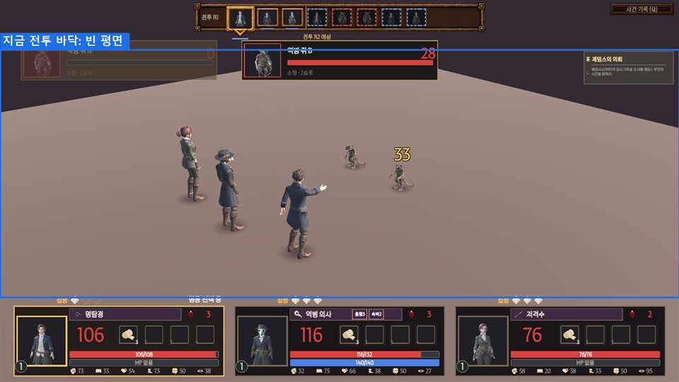
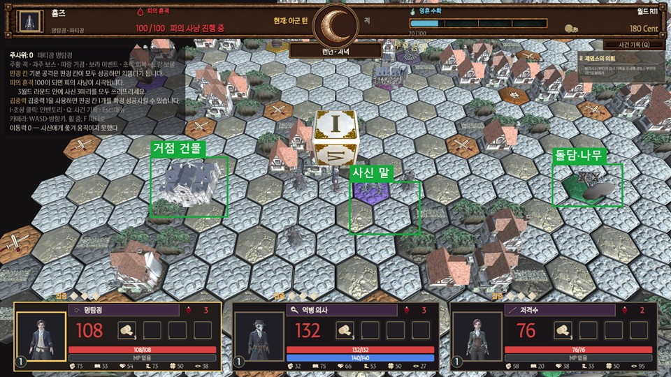

디자인에 부탁할 일을 한 장에 모았습니다. 3D가 중심이고, UI는 별도 요청서를 가리킵니다. 어려운 말은 빼고 썼습니다. "짐작"이라고 쓴 곳은 개발의 추측입니다.
11/5 모델 요청서 · 11/6 움직임 요청서 · 11/10 디자인 작업 요청서 · 11/10 UI 디자인 요청서를 다시 맞춰 보고, 아직 답이나 파일이 안 온 것을 모두 모았습니다.
| 번호 | 일 | 담당 | 구분 | 언제까지 | 한 줄 설명 |
|---|---|---|---|---|---|
| A | 역병 의사 회복 동작 | 3D | 꼭 (기획 결정) | 11/12 | 회복 스킬을 쓸 때 지금은 가만히 서 있음. 회복 동작 1개 → 모션 요청서 N1 |
| B | 만든 도구·요금제 알려 주기 | 3D | 꼭 (답) | 11/14 | 도구는 파일 이름으로 Meshy AI 확인 (11/11). 남은 것은 무료·유료 요금제. 크레딧 출처 표시에 필요 — 11/6에 물었는데 답 없음 |
| C | 사신 공격 모양 | 3D | 답 필요 | 11/12 | 공격할 때 낫이 몸 뒤로 빠짐. 새 동작 / 개발 각도 조정 중 고르기. 개발 추천은 "개발 조정" → 모션 요청서 W4 |
| D | 낮은 바위 1개 | 3D | 답 필요 (선택) | 11/12 | 판 앞줄 막힌 칸에 지금은 돌담을 씀. 괜찮으면 할 일 없음, 바위가 필요하면 1개 (3번) |
| E | 11/5에 부탁했지만 안 온 모델 | 3D | 답 필요 | 11/12 | 거리 소품 4종 · 적 칸 깃발 · 전투 바닥 2종. 올지, 1막에서 뺄지만 알려 주기 (3번) |
| F | Normal 텍스처 2개 | 3D | 있으면 | 11/12 | 아벨 모로 · 연성 독거미(유체)만 굴곡(Normal) 텍스처가 없음. 없으면 그대로 씀 |
| G | 전투 배경 같이 보기 | 3D | 선택 | 11/15 | 개발이 받은 집·담·나무로 배경을 만듦. 11/15 검수 때 어색한 곳만 말해 주기 (2번) |
| H | 그림이 없는 UI 15개 | UI | U5 꼭 · 나머지 있으면 | 11/12 | 파티 카드·대화 창·안쪽 판 등. U5 아벨 모로 3:4 초상은 필수. 별도 "UI 디자인 요청서" (5번) |
| J | 없는 동작 · 어색한 동작 | 3D | 무기·부활 꼭 | 11/12 | 무기 4개 · 부활 일어서기 · 공격 보강 · 강화·아이템·방어 등. 별도 "모션 요청서 (2026-11-11)"에 사진과 같이 정리 |
| I | 1막 뒤 목록 | 3D | 1막 뒤 | 11/18 뒤 | 남은 직업·적, 장소, 효과 등 (4번). 동작은 모션 요청서로 옮김 |
이미 받은 모델·동작은 모두 게임에 들어가 있습니다 (6번 목록). 11/12 이후 새 그림·모델은 1막에 못 넣습니다.
A. 역병 의사 회복 동작 — 자세한 내용은 "모션 요청서 (2026-11-11)" N1로 옮겼습니다.

C. 사신 공격 모양 — 사진·선택지는 "모션 요청서" W4로 옮겼습니다.
메인 메뉴 아래 크레딧에 출처를 적습니다 (기획 회신 01). 받은 인물 모델은 파일 이름(Meshy_AI_…)으로 Meshy AI로 만든 것을 확인했습니다. 남은 것: 무료·유료 요금제, 그리고 소품·건물도 Meshy인지. 무료 요금제는 출처 표시가 필요한 경우가 있어 꼭 확인이 필요합니다 (짐작). 11/6 움직임 요청서에서 물었는데 아직 답이 없습니다. 팀원 이름과 같이 11/14까지.
기획 결정 2A로 판 앞줄(카메라 쪽) 막힌 칸은 높은 집 대신 낮은 나무·바위를 놓습니다. 받은 모델에 바위가 없어 돌담(Prop_StoneWall)으로 대신했습니다. 지금으로 괜찮으면 할 일 없음. 바위가 필요하면: 높이 0.3~0.5m, 칸 지름 약 1.3m 안, 이름 Prop_Rock_Low.
| 모델 | 쓰려던 곳 | 안 오면 |
|---|---|---|
거리 소품 4종 — 등불 기둥 · 나무통 · 관 · 부서진 손수레 (Prop_Lamp · Prop_Barrel · Prop_Coffin · Prop_Cart) | 판 빈 칸 가장자리 분위기, 전투 배경 장식 | 지금처럼 없이 감 |
적 칸 깃발 (Prop_EnemyBanner) | 일반 적 칸 10곳 위 교단 깃발 | 지금 칼 표시 칸 그대로 |
전투 바닥 2종 (Arena_LondonStreet · Arena_Morgue) | 일반 전투 · 아벨 모로 전 바닥 | 개발이 받은 집·담·나무로 꾸밈 (G) · 보스전은 조명만 |
셋 다 11/5 요청서의 C등급(여유 있을 때)이었습니다. 11/12까지 어렵다면 "1막에서 뺌"이라고만 답해 주세요.
다른 인물은 색·금속·굴곡(Normal) 텍스처 3장이 왔는데, 아벨 모로와 연성 독거미(유체)는 굴곡 텍스처가 없습니다. 있으면 Model_AbelMoreau_Normal.png · Model_SpiderLarva_Normal.png로 보내 주세요. 없으면 지금대로 씁니다.
| 종류 | 할 일 |
|---|---|
| 동작 | 모두 "모션 요청서"로 옮김 (걷기 N9 · 부활 N2 · 강화 스킬 N3 · 아이템 N4 · 사신 낫 W4 등) |
| 캐릭터 | 남은 직업 5개 (이단심문관·연금술사·지휘자·암살자·도박가) — 2차 |
| 적 | 중·대형 적 7종 · 2막·3막 보스 — 2차 |
| 장소 | 베르사유·로마 건물과 칸 · 템스 강 · 안개 |
| 효과 | 맞음·크리티컬·빗나감 · 회복·정화·부활 · 상태 걸림(출혈·중독·혼란·속박) · 쓰러진 적 칸 흔적 |
순서는 1막 끝난 뒤 기획과 다시 정함.
UI 그림은 "UI 디자인 요청서 (2026-11-10)" 한 장에 화면별 사진과 같이 모았습니다. 여기는 목록만 적습니다. 마감 11/12.
| 번호 | 그림 | 구분 | 어디 |
|---|---|---|---|
| U5 | 아벨 모로 3:4 초상 (배경 투명) | 꼭 | 보스 대화 · 보스 등장. 제임스·점술마녀와 같은 모양 |
| U1 | 파티 카드 판 | 있으면 | 화면 아래 아군 3장 |
| U2 | 대화 창 | 있으면 | 인물 대화 아래 상자 |
| U3 · U4 | 안쪽 판 · 초상 틀 (공용) | 있으면 | 창 안 목록·설명 칸, 얼굴 네모 칸 |
| U6 · U7 | 제목 띠·적 크기 표식 · 보스 등장 띠 | 있으면 | 전투 전 창 · 보스 등장 |
| U8 · U9 · U10 | 작은 상자 · 목록 한 줄 · 주사위 칸 표식 | 있으면 | 알림·칸 정보 · 상점 목록 · 굴림 결과 |
| U11 · U12 · U13 | 분수대·석상 그림 · 적 HP 카드 · 행동 아이콘 | 있으면 | 이벤트 창 · 전투 위 적 카드 · 전투 행동 버튼 |
| U14 · U15 | 메뉴 배경·로고 · 머리 탭 | 있으면 · 선택 | 메인 메뉴 · 창 위 |
개발 임시 처리(11/11): 칸 정보 상자·소지금 상자·점술마녀 띠는 받은 사각 버튼 판을 어둡게 깔아 씀. U3·U8이 오면 바꿈.

원본은 깃허브 저장소 Assets/_Project/Art/Models/ 아래에 있습니다.
| 종류 | 파일 | 상태 |
|---|---|---|
| 아군 3명 | Model_Detective(명탐정) · Model_PlagueDoctor(역병 의사) · Model_Sniper(저격수) | 사용 중 · 대기·공격·맞음·쓰러짐 4동작 |
| 적 6종 | Model_PlagueRat · Model_SpiderLarva · Model_ShadowHound · Model_GargoyleLarva · Model_ShadowReaper · Model_AbelMoreau(보스) | 사용 중 · 4동작씩 |
| 건물 | Prop_Hub_Greenwich(거점) · Prop_Boss_Morgue(폐검시소) · Prop_House_A · Prop_House_B | 보드에 사용 중 |
| 소품 (사용 중) | Prop_Trees_A · Prop_StoneWall · Prop_Treasure · Prop_Well · Prop_FortuneTent · Prop_Fountain · Prop_ExitGate · Prop_Scythe | 보드·전투에 사용 중 |
| 소품 (아직 안 씀) | Prop_House_C · Prop_Trees_B · Prop_Fence · Prop_StoneArch | 전투 배경(G)에 쓸 예정 |
| 칸·주사위 | Tile_Road_A · Tile_Road_B · 주사위 1개 | 사용 중 |
| 파일 | FBX + 텍스처 PNG(색·Normal) + 원본 .blend도 같이 |
|---|---|
| 크기·방향 | 내보낼 때 Apply Transform, Scale 1.0. Forward −Z · Up Y. (단위가 섞이면 크기가 100배 차이 남 — 낫이 2cm로 줄었던 원인) |
| 뼈대 | 사람 모양 인물은 지금 모델과 같은 뼈대 (동작을 같이 씀) |
| 무게 | 소품 삼각형 8,000개 이하 · 텍스처 인물 2048 · 나머지 1024 |
| 보내는 곳 | 팀장(최동환)에게 전달 → 개발이 게임에 넣고 화면을 찍어 다시 보여 줌 |